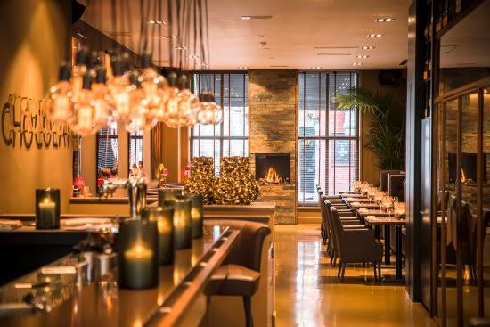

Some Restraunt
You may have heard that 90% of restaurants fail in their first year. If you’ve already been in the industry for a while, you probably know that this figure is flat-out false. Economists from the University of California, Berkeley dug into the numbers and found the actual statistic is closer to 17%. That said, no one wants to be in that 17%. Especially when the median cost to open a restaurant is over $370,000.
You may have the perfect menu, ideal location, and a great team, but what are you doing to market your business? No restaurant can survive without consistent demand. Text message marketing allows restaurants, coffee shops, or other businesses in the food service industry to bring in new customers and keep them coming back.